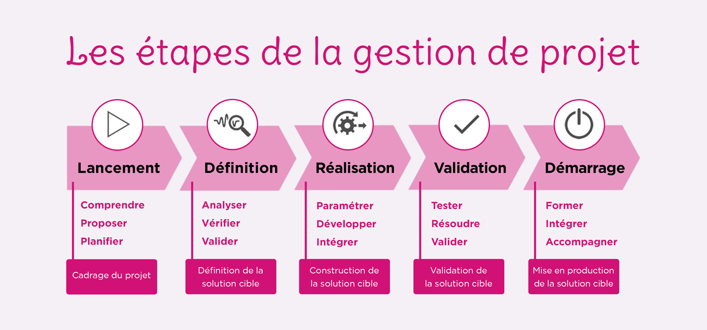

| Notions | Definitions | Image |
| Developement D'applications | Théorie et traitement de l'information à l'aide de programmes mis en œuvre sur ordinateurs. |  |
| Gestion Bases de données | Une base de données permet de stocker et de retrouver des données structurées, semi-structurées ou des données brutes ou de l'information, souvent en rapport avec un thème ou une activité ; celles-ci peuvent être de natures différentes et plus ou moins reliées entre elles |  |
| Gestion de Projet | La gestion de projet, est l'ensemble des activités visant à organiser le bon déroulement d’un projet et à en atteindre les objectifs en temps et en heures selon les objectifs visés. |  |